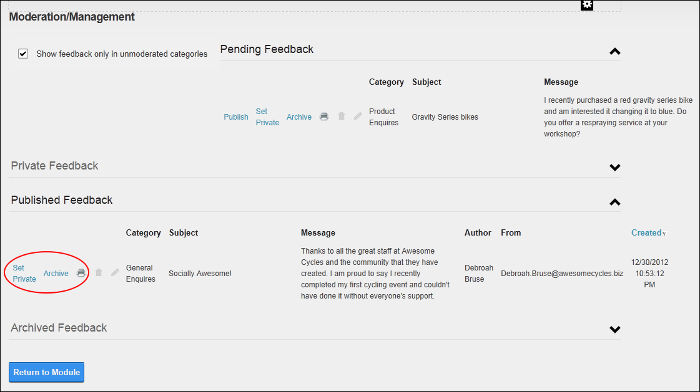

Reclassifying Moderated Feedback
How to reclassify feedback submitted using the Feedback module. This enables you to set any feedback comments that have already been moderated as visible or not visible in the Feedback Comments module.
- Select Feedback Moderation from the Feedback module actions menu.
- Optional.
at Show feedback only in unmoderated categories to limit feedback displayed to unmoderated categories only. This is useful if you wish to check the integrity of unmoderated categories.
- Locate the feedback post to be reclassified and click one of these links:
- Click the Publish link to publish the feedback on the Feedback Comments module.
- Click the Set Private link to set feedback as private. Private feedback is not published on the Feedback Comments module and is only viewable in the Private Feedback section of this page.
- Click the Archive link to archive feedback. Archived feedback is not published on the Feedback Comments module and is only viewable in the Archived Feedback section of this page.

- Click the Return to module link to return to the module.